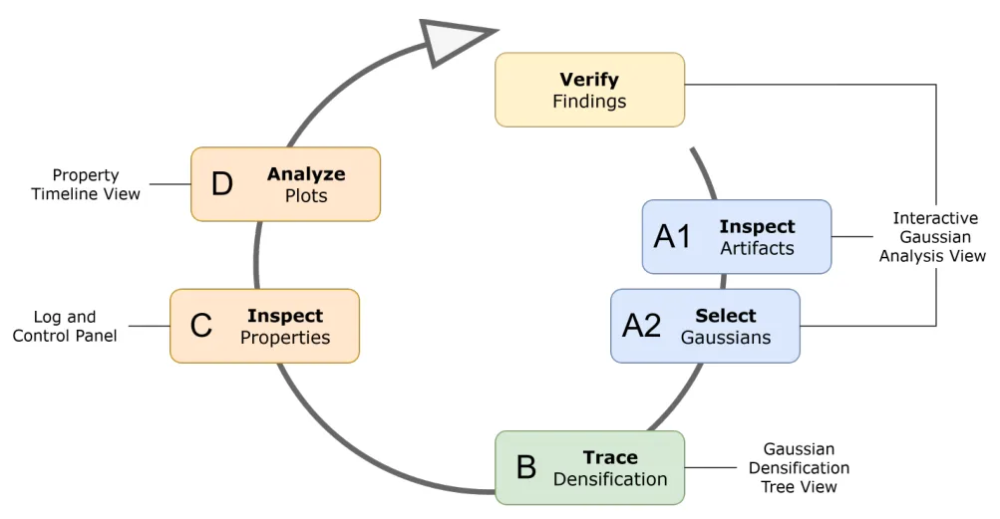
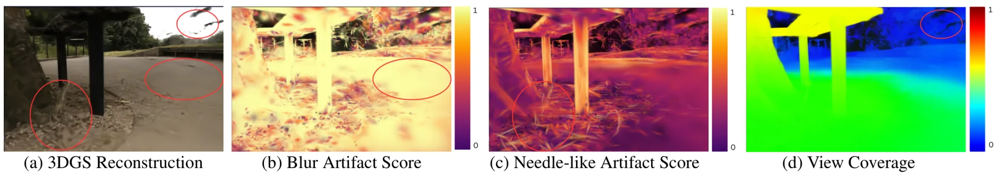
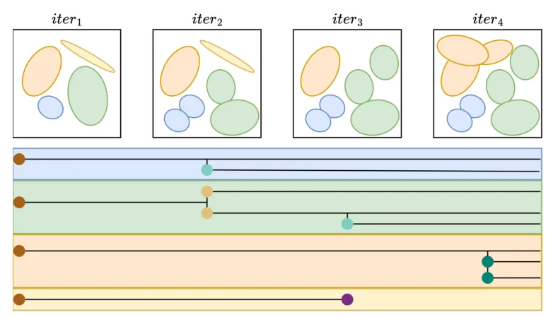
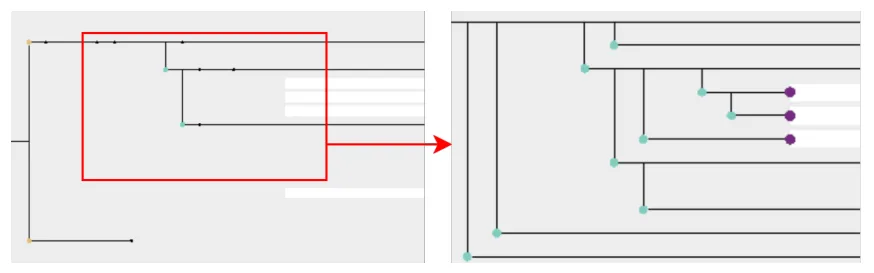
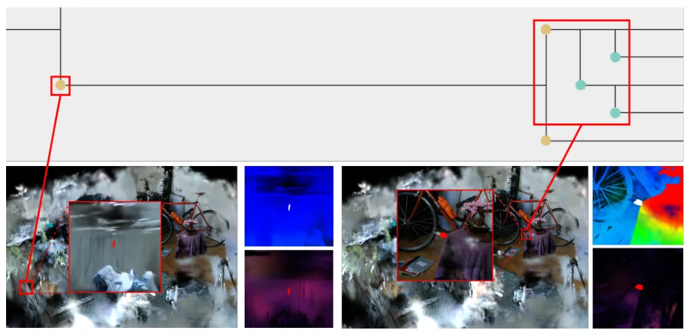
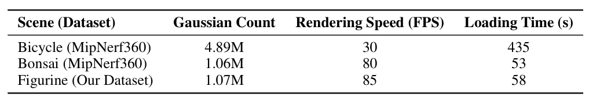

Vis4GS：用于 3D Gaussian Splatting 重建诊断的可视分析工具Vis4GS: A Visual Analytic Tool for 3D Gaussian Splatting Reconstruction
不是新 SLAM 算法，但对 3DGS 地图/重建工程调试很实用，可帮助定位模糊、漂浮点、覆盖不足和 densification 失控；需看工具是否开源和大场景性能。
一句话工作总结
把 3DGS 渲染伪影追溯到具体 Gaussian 属性、视角覆盖和 densification 训练事件，服务重建质量诊断。
摘要
3DGS 训练速度快、渲染实时，但优化过程和伪影来源往往难以解释。现有 viewer 多展示最终场景，较少把可见伪影与 Gaussian primitive 属性、训练过程和 densification/pruning 历史连接起来。Vis4GS 在原始 3DGS viewer 与训练框架上扩展了四个联动视图：交互式 Gaussian 分析视图、属性时间线视图、Gaussian densification tree 视图，以及日志/控制面板。系统支持 Gaussian 选择、模糊和针状伪影评分、View Coverage 分析，以及 clone/split/prune/clone-split 等事件的多尺度 genealogy 浏览。用户研究显示其在可用性和伪影理解上优于原始 3DGS viewer。
3D Gaussian Splatting (3DGS) supports fast training and real-time rendering, but its optimization process remains difficult to interpret. Existing viewers mainly expose the final reconstructed scene and offer limited support for explaining how Gaussian properties contribute to visible artifacts or evolve during training. We present Vis4GS, a multi-view visual analytics tool for primitive-level diagnosis of 3DGS reconstruction artifacts. Built on the original 3DGS viewer and training framework, Vis4GS links rendered artifacts to Gaussian properties, View Coverage, training progress, and Gaussian genealogy through four linked views: an interactive Gaussian analysis view, a property timeline view, a Gaussian densification tree view, and a log and control panel. The system supports Gaussian selection, blur and needle-like artifact scoring, View Coverage analysis, and multiscale genealogy exploration of clone, split, prune, and clone-split events. By connecting scene-level artifacts with primitive-level evidence and optimization history, Vis4GS enables a structured workflow for diagnosing reconstruction failures beyond final-image inspection and global metrics. A user study also shows that Vis4GS provides stronger support for usability and artifact understanding than the original 3DGS viewer.
中文解读摘录
- 英文题名：SatSplatDiff: Geometry-preserving generative refinement for high-fidelity satellite Gaussian Splatting
- 作者：Jiyong Kim, Shuang Song, Ronjgun Qin
- 类别/来源：cs.CV；23 pages, 15 figures；采集 score=10；阅读优先级=8.2/10。
- 一句话总结：在 SatSplat 的摄影测量 DSM 初始化与 2DGS 阴影建模基础上，加入深度监督、多尺度几何细化和 shadow-guided generative refinement，试图提升卫星 3DGS 外观质量同时抑制扩散式细化带来的几何幻觉。
- 为什么值得看：卫星/航测场景的视角通常集中在顶部，建筑立面监督不足，3DGS 容易出现洞、立面不稳定和跨 tile 不一致。本文强调“生成式增强不能破坏几何一致性”，用几何计算阴影图约束监督图像更新；摘要报告 IARPA2016/DFC2019 上几何 MAE 最高降低 18%、FID-CLIP 改善 28–45%、可达 5x 分辨率增强，并给出源码
https://github.com/GDAOSU/SatSplatDiff。建议重点复核代码完整度、DSM/阴影先验依赖、跨 tile 泛化和是否存在外观 hallucination。 - 标签：卫星三维重建、3DGS、生成式细化、几何一致性
- 链接：abs / PDF
图表/页面预览

{kind=link}

{kind=link}

{kind=link}

{kind=link}

{kind=link}

{kind=link}
